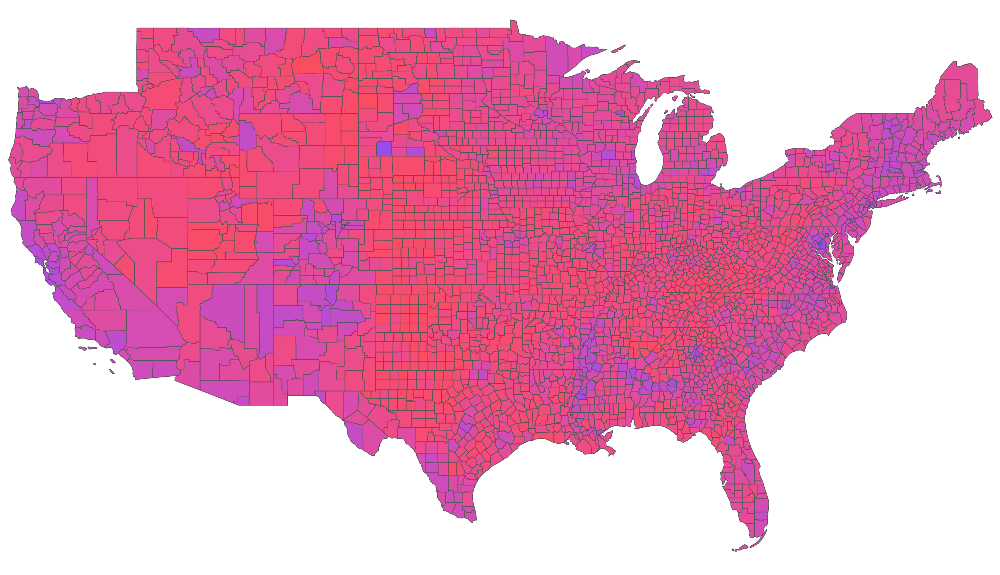

The key data and code can be found on Github. The code uses R, Python, and SQL (just to show I can do it - either R or Python would be enough because these datasets are big enough to fit in memory).
Counties have a great variation in size: Los Angeles County, CA has over 10 million people, while Loving County, TX has under 100. Each county is identified by a unique FIPS code, widely used for geographic units. For example, Los Angeles County is 06037. The 06 is for California, and each county has a 3-digit code.
I first downloaded presidential election voting data from the MIT Elections Project in order to save harvesting from 51 individual websites. Much further into the project, I found an amazing dataset compiled by C. Algara and S. Amlani, which goes back much further in time, and appears to be of higher quality (for example, I need to let them know at MIT that some of the famous Bush-Gore Florida 2000 results are wrong, though these are the only errors I noticed).
For polling data, I used individual years from Wikipedia and RealClearPolitics to get either the final Gallup poll or the RCP polling average as late as possible before Election Day. These are national-level polls, as is common. For earlier years I used the actual election popular vote percentages taken from Wikipedia.
Let's look at a choropleth map of 2020 election results by county (excluding Alaska and Hawaii). I found (can't recall where - apologies to the creator of this file) an existing geojson format file describing all the relevant geographical information and merged with the voting data above. The bluer the color, the higher the share of the vote won by the Democratic party in that county, so a vote share of 0 is bright red and a vote share of 1 is bright blue. For the purposes of the map, Other is excluded, but it doesn't make much difference to the naked eye. Note that there are a few obvious standouts - can you see the Oglala Sioux reservation in South Dakota? - but the idea that there are "red" and "blue" states is obviously a great oversimplification.

Using a standard linear regression to predict D vote share, where 2000-2016 is the training data and 2020 is the test data, yields mean error in the 4-5 percentage point range and R^2 = 0.88.
This level of error would be amazingly good for many applications. However, for election prediction, this is not so. The problem is that many states are not very close, and the election really hinges on 7 or so "swing states" where the margin of victory can be much smaller than the errors we achieve. So we should try harder.
Moving on to incorporate polling data, we are faced with the fact that most polls are national. The standard way to downscale changes in national vote shares to a smaller district such as a county is to use a "swing model". The most popular is uniform swing: if we add 5% to a party's overall vote share then we simply impute a 5 percentage point increase to it in each county. This obviously can't be correct in general (see my paper with Bernie Grofman) but seems fairly good in practice. Initially, we will not impute any district-level swing, but simply use the national swing as a predictor and see what happens.
The results are fairly impressive (remember these are results on the test set, not the training set): R^2 = 0.97 and mean error under 2 percentage points. The residuals look good, with very few outliers.
I tried quadratic regression with various subsets of the predictors above, and nothing worked as well as the simple linear regression. I also looked at other methods such as RandomForest or XGBoost, and nothing did as well as linear regression. I did not yet spend time to tune the hyperparameters of the fancier models, but I seriously doubt they will outperform the current best. I suspect that better predictor variables are really what is needed.
US Census data (decennial census and Annual Community Survey estimates) are useful, but difficult to access via the Census Department website. I downloaded from University of Minnesota IPUMS, for which site I am thankful. There is a huge variety of information, and as a start I stuck to age, sex, race, education, and personal income reported by county. The age data is quite detailed, roughly giving each 5-year interval from birth to age 85, so instead I downloaded the median age for male and female separately. Educational attainment has 3 levels (basically elementary, high school, college). I converted all numbers to proportions to normalize between 0 and 1. This is where I used SQL to extract what was needed for the basic analyses.
Interestingly, these demographic variables do not help. The fancier methods clearly outperform linear regression on this more complicated model, but nothing comes close to what we already had. Unsurprisingly, just using demographics instead of polling data works even worse.
There are some interesting questions here, and I am sure it is possible to squeeze out slightly better predictions, but I doubt that going much below 2 percentage points error will happen anytime soon.
Using the actual turnout numbers, the predictions aggregate to state-level predictions of the winning party that are correct except for a few swing states, as expected. As mentioned, there is plenty of work to do!